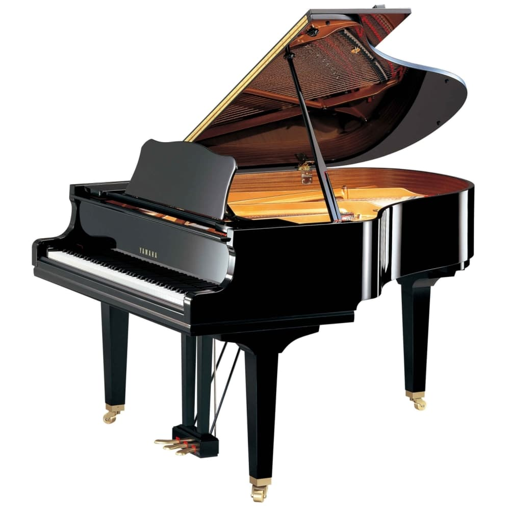

Фортепиано
Фортепиано - это удивительный музыкальный инструмент, который считается одним из самых популярных и универсальных среди всех музыкальных инструментов. Его история насчитывает более трех веков, и фортепиано остается непревзойденным символом музыкального искусства.
Этот инструмент поражает своим широким диапазоном звуков: от нежных и мелодичных нот до мощных и громких аккордов. Фортепиано работает по принципу перкуссионного инструмента - звуки создаются ударом молоточков по струнам, что придает музыке особую экспрессию и динамику.
Фортепиано чрезвычайно популярно в классической музыке, где оно используется как сольный инструмент и для аккомпанемента. Оно также нашло применение в жанрах от джаза и рока до поп-музыки и многих других стилей. Многие известные композиторы и пианисты вложили свою душу и талант в создание музыки для фортепиано, что сделало его неотъемлемой частью музыкального мира.
Играть на фортепиано - это искусство, требующее технического мастерства и музыкальной чувствительности. Этот инструмент может выразить широкий спектр человеческих эмоций, от радости и восторга до грусти и меланхолии. Наверное, нет другого инструмента, который мог бы так глубоко поразить сердце слушателя.
Сегодня фортепиано доступно каждому, и оно остается не только музыкальным инструментом, но и символом красоты и гармонии в мире музыки.